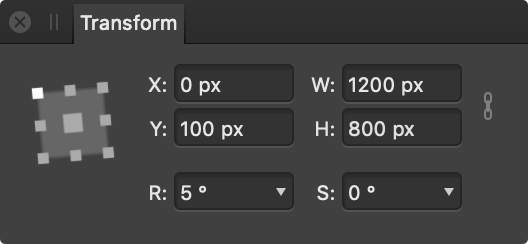

About the Transform panel
The Transform panel places objects (or layers) precisely. All transforms are carried out in relation to a defined anchor point—corner, edge midpoint or center—allowing the selected object or layer's position, width, height, rotation angle and shear to be adjusted.
If an object has a custom transform origin applied, it can be resized, rotated or sheared about that center using the options on the panel.

The following controls are found on the Transform panel:
- Anchor point selector—transforms are carried out from the selected anchor point. Click on an anchor point to select. If the object has a custom transform origin, it will be ignored if this selector is then used.
- X—Horizontal position. Increasing the value moves the selected object (layer) to the right.
- Y—Vertical position. Increasing the value moves the selected object (layer) down the page.
- W—Width. Adjusts the object (layer) width in relation to the selected anchor point.
- H—Height. Adjusts the object (layer) height in relation to the selected anchor point.
 Link—when enabled, width and height are adjusted in proportion to each other, maintaining the current aspect ratio. When deselected, they can be adjusted independently.
Link—when enabled, width and height are adjusted in proportion to each other, maintaining the current aspect ratio. When deselected, they can be adjusted independently.- R—Rotation. Rotates the object (layer) by a specified number of degrees in relation to the selected anchor point.
- S—Shear. Shears the object (layer) by a specified number of degrees in relation to the selected anchor point.
- L—Length. Replaces Shear (S) when a straight line is selected using the Move Tool. Allows you to precisely adjust the line's length. The Anchor point selector changes its appearance for straight lines.